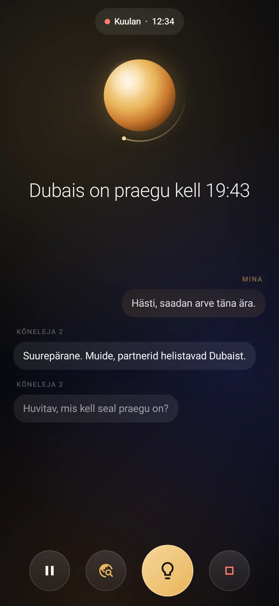
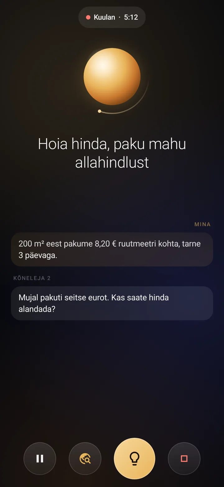
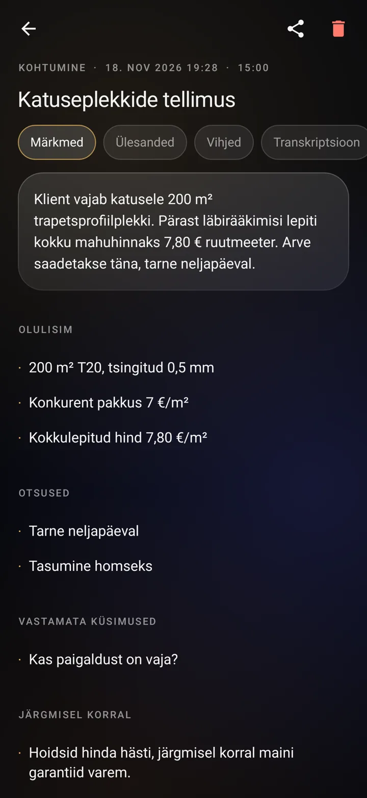

Reaalajas vestlusabiline
Teine mõistussinu kõrvas.
Enkirai kuulab kohtumist, kõnet või läbirääkimisi ja sosistab ~1,7 sekundiga vastuse kõrvaklappi. Pärast vestlust on märkmed ja ülesanded valmis.
Peagi Google Plays
Vastus kõrvas enne, kui paus muutub piinlikuks.
Enkirai kuuleb küsimust, otsustab, kas tasub aidata, ja sosistab mõne sõna kõrvaklappi. Umbes 1,7 sekundit algusest lõpuni.

Mida Enkirai sinu eest teeb

Kohtumine lõppes. Märkmed on valmis.
Kokkuvõte, otsused, lahtised küsimused ja ülesanded vastutajate ning tähtaegadega umbes kümme sekundit pärast lõppu. Ühe puudutusega kopeerid kõik.

5 keelt
Leedu, inglise, poola, läti ja eesti keel, isegi kui need ühes vestluses segunevad.
Privaatsus eelkõige
Transkriptsioonid jäävad sinu telefoni. Reklaame pole, andmeid ei müüda. Ütle vestluskaaslastele, et teed märkmeid AI-ga.
Kuule seda esimesena.
Liitu ootenimekirjaga. Testijad saavad varajase ligipääsu ja aasta tasuta.
Peagi Google Plays